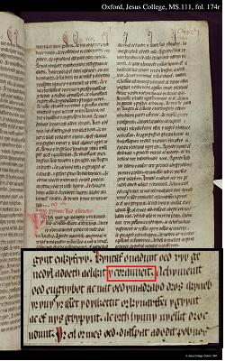
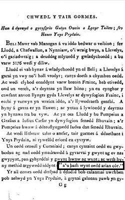
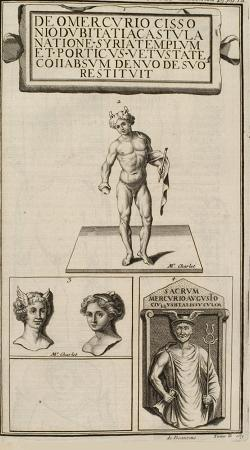

Les nains
The Gnomes
Dialecte de Cornouaille
|
- Deux contes similaires, "Couloumer et Guilchand" et l'"Histoire de Jannic an Treveziou", ont été publiés dans la Revue de Bretagne tome IV -3ème livraison (2ème année) Mars 1834, Rennes (pp. 109 - 114 et 115 -118) par Corentin Tranois . Cette référence n'est mentionnée que dans le Barzhaz de 1839. |

|
- Two similar tales, "Couloumer and Guilchand" and "The story of Jannic an Treveziou" were published in "Revue de Bretagne", book IV -3rd release (2nd year) March 1834, Rennes (pp. 109 - 114 and 115 -118) by Corentin Tranois . This reference is acknowledged in the 1839 edition of the Barzhaz only. |
Ton
(Si bémol majeur, Arrangt MIDI: Chr. Souchon)
| Français | English |
|---|---|
|
1. Paskou le Long, le tailleur,
|
1. The Long Paskou, the tailor,
|
Cliquer ici pour lire les textes bretons.
For Breton texts, click here.

|
Résumé
Cette histoire de tailleur qui vole le trésor des nains fait partie d'un fond traditionnel de contes caractérisé par la comptine des jours de la semaine qui n'est pas spécifique à la Bretagne. En revanche le profond mépris envers les tailleurs semble propre au peuple des campagnes bretonnes. L'authenticité de ce chant cornouaillais très localisé ne fait aucun doute. On soupçonne seulement, en le comparant à une version publiée par Luzel, que La Villemarqué a procédé à deux ajouts au matériau qu'il a collecté: l'un pour le vieillir, l'autre pour le rapprocher des traditions galloises. (cf. Gwenc'hlan ), La comptine des Nains L'illustration ci-dessus se rapporte à une autre histoire, "An daou dortig" (les deux bossus), que l'on trouve, sous la plume de F.M. Luzel, dans les annales de la "Breuriez Breiz-Izel" (Confrérie de Basse Bretagne, publiée à Morlaix en 1869, p. 56-58: Il s'agit cette fois de 2 tailleurs, bossus l'un et l'autre. Le premier, au retour d'une noce où il avait mené le bal avec son violon, rencontre les nains qui dansent sur la lande en chantant le même couplet que dans la présente chanson. Avisant son instrument, les "korollerien-noz" (danseurs nocturnes) l'invitent à se joindre à eux. Le courageux Gabig, non seulement accompagne leur danse sur son crincrin, mais complète leur chanson "dilun, dimeurzh, dimerc'her" (lundi, mardi, mercredi) par ce vers supplémentaire: "ha diryaou ha digwener" (et jeudi et vendredi). Les nains, enchantés de cette innovation, lui demandent de choisir entre 2 présents: la beauté ou la richesse. Il choisit la beauté et aussitôt sa bosse disparaît. Le lendemain, son ami, Nonnig, s'étonne, de le voir "didortet" ("débossé") et s'enquiert de l'origine de cette métamorphose. Le soir même, Nonnig se rend sur la lande aux nains et l'on assiste au même manège que la veille. Il propose aux petits danseurs d'améliorer leur chanson en ajoutant: "ha dizadorn ha disul" (et samedi et dimanche), ce qui relève d'une logique sans faille, mais d'un sens de l'esthétique poétique un peu atrophié. Les nains, mécontents de voir leur chanson enlaidie, veulent le renvoyer les mains vides. Nonnig proteste: "Donnez-moi au moins ce dont Gabig n'a pas voulu!"... On devine la suite: le cupide tailleur fut à partir de cet instant doublement bossu. La Bretagne ne possède pas en propre cette histoire de chant qui égrène les jours de la semaine. Henry Carnoy dans "Littérature orale de la Picardie" (1883, Cf. "fr.wikisource.org/wiki/Littérature_orale_de_la_ Picardie ") rapporte une histoire identique, "Les lutins et les deux bossus" collectée, en Picardie, à Acheux dans la Somme, en 1878. Les deux héros sont des valets de ferme et le récit est teinté de théologie!: "En ajoutant le dimanche aux six autres jours de la semaine, lui dit-[le chef des lutins], tu nous as délivrés d'une malédiction que nous endurions depuis des milliers d’années, depuis la création des hommes et des lutins. Le Seigneur nous avait ordonné de travailler les six premiers jours de la semaine et de nous reposer le septième jour, le dimanche....Mais lors d'une grande chasse, le bon Dieu...plaça devant nous un cerf merveilleux... que nous n'atteignîmes que le dimanche, et ... nous tuâmes la pauvre bête. Pour nous punir de notre désobéissance, nous fûmes chassés du Paradis et condamnés à errer sur terre jusqu’à ce qu’un mortel nous rappelât le nom du jour inobservé autrefois par nous. Bien des fois, les vivants se sont mêlés à nos rondes, mais aucun jusqu’à présent n’avait pu achever notre refrain. Tu viens de le faire et nous t’en remercions. Dès ce moment, on ne nous verra plus errer sur cette terre ; notre course est finie et nous allons bientôt retourner au Paradis. Le thème de la bosse Quant à l'histoire de la bosse enlevée puis surajoutée, qu'on peut rapprocher des "Souhaits ridicules" des Contes de Perrault ("Mercure Galant", 1693), elle semble avoir fait le tour du monde: - Le conte N°182 de la collection "Kinder- und Hausmärchen" des frères Grimm (1819), "Die Geschenke des kleinen Volkes" (les Présents du Petit peuple) relate une histoire analogue, quoique plus complexe. Henry Carnoy indique que l'on trouve des récits similaires - dans "Legendary Fictions" of the Irish Celts, London, 1866, p. 100 et p. 104; - dans le n° 18 du "Rondallayre de Maspons y Labros", 3e série, 1875 ; - dans l’"Almanach provençal" de 1869, p. 61 ; - dans "the Folk-Lore of Rome", de Miss Burk, Londres 1874, p. 96; - dans "Fiabe, Novelle, etc." (conte de Sicile), Palerme 1875; - et même, dans ses "Tales of Old Japan" (Londres 1871, t. I, P. 276), un conte japonais publié par A. B. Mitford dans ses "Tales of Old Japan", dans lequel les lutins enlèvent une loupe à un voyageur qui a dansé la nuit avec eux. Des analyses de ces contes ont été faites par plusieurs ethnographes: MM. Ralston (Fraser’s Magazine, avril 1876, p.432), H. Gaidoz (Mélusine, col. 242) ; Emmanuel Cosquin (Mél., col. 161 et suiv ; 242), etc. L'exécration des tailleurs Ce qui est particulier à la Bretagne, en revanche, c'est l'exécration des tailleurs. On se perd encore en conjectures sur l'origine de l'anathème dont étaient frappés les "kemenerien" (tailleurs) bretons: leur reprochait-on de tricher sur le tissus qu'on leur confiait, de ne pas exercer une profession assez virile, d'approcher de trop près les dames...? Voici comment, dans l'"argument" qui précède le chant dans les trois éditions principales du Barzhaz (1839, 1845 et 1867), La Villemarqué décrit la chose: Après avoir souligné que les chants les concernant sont aussi rares que les contes à leur sujet sont nombreux, il écrit: "[ce chant] a tout l’air d’une satire contre les tailleurs, cette classe vouée au ridicule, en Bretagne comme dans le pays de Galles, en Irlande, en Ecosse, en Allemagne et ailleurs, et qui l’était jadis chez toutes les nations guerrières, dont la vie agitée et errante s’accordait mal avec une existence casanière et paisible. Le peuple dit encore de nos jours, en Bretagne, qu’il faut neuf tailleurs pour faire un homme, et jamais il ne prononce leur nom, sans ôter son chapeau et sans ajouter : « sauf votre respect.» La Très-ancienne Coutume de cette province paraît les ranger dans la classe des « vilains natres, ou gens qui s’entremettent de vilains métiers, comme être écorcheurs de chevaux, de viles bestes, garsailles, truandailles, pendeurs de larrons, porteurs de pastez et plateaux en tavernes, crieurs de vins, cureurs de chambres quoies, poissonniers ; qui s’entremettent de vendre vilaines marchandises, et qui sont ménestriers ou vendeurs de vent ; lesquels ne sont pas dignes de eux entremettre de droits ni de coustume.» Le nom des nains Ces "grottes de pierres" sont le prolongement de l'explication fournie par le Père Grégoire, à l'article "fée", où l'on trouve plusieurs autres noms: "Lieu de fées ou de sacrifices: c'est ainsi que le vulgaire appelle certaine pierres élevées couvertes d'autres pierres plates, fort communes en Bretagne et où ils disent que les païens offraient autrefois des sacrifices. Ils ajoutent que leurs ancêtres ont vu auprès de ces lieux beaucoup de petits nains tout noirs danser etc... Ty ar gorriged, ty ar gorriganed, ty ar boudigued , ty ar re vihan , tiez ar gorrigued." La Villemarqué y rapproche ce mot de "du" qui signifie "noir". On remarquera que les êtres surnaturels que Richard Wagner met en scène dans la Tétralogie, les "Alben" se répartissent en 2 catégories, les "Lichtalben" et les "Schwarzalben", les elfes de lumière et les elfes noirs . Ces derniers qui ont pour roi le sinistre Alberich (baryton), sont des nains voués à l'obscurité et au monde souterrain où ils gardent des trésors fabuleux. On ne peut soupçonner La Villemarqué d'un emprunt au Maître qui n'a commencé à écrire qu'à partir de 1848 ce chef d'œuvre dont la première représentation officielle eut lieu le 13 août 1876. Origine ou parenté galloise? Un autre mot pour désigner le nain est fourni par le Dictionnaire du Père Grégoire de Rostrenen (1732)/ il s'agit de "cornandoun" (" "kornandon" ). Le féminin "kornadonez" désigne la fée dans de multiples versions trégoroises du Seigneur Nann collectées par Luzel et de Penguern. La forme masculine "kornandon" n'est évoquée qu'une seule fois dans le Barzhaz à propos du présent chant et de façon indirecte, c'est quand il est question des "Coraniens" dans les "notes" de l'édition 1839. Jeffrey Gantz, l'auteur américain de la traduction des Mabinogion parue en 1976 chez Penguin Classics, voit, lui aussi, dans ces "Coraniaid" les ancêtres des kornandoned bretons (p.128). Comme le précédent , le présent chant s'inspire, à l'évidence des articles de Corentin Tranois ' dans la "Revue de Bretagne", numéro de mars 1834, intitulés "Histoire de Jannic an Treveziou" (pp. 115-118) et "Histoire de Couloumer et Guilchand" (pp. 118 - 122). La Villemarqué y a trouvé la description qu'il fait des nains; la légende qui fait d'eux les bâtisseurs des mégalithes bretons; celle qui veut que leurs sacoche ne contiennent que des crins sans valeur; celle de la malédiction liée aux jours de la semaine qui pèse sur ces malheureuses créatures et qu'il reprendra dans sa longue Introduction qu'on trouvera ci-après. Il a également emprunté à cet auteur une partie de l'intrigue du présent chant, ainsi que la variante indiquée dans la "note" qui le suit, où l'on voit Yannik-an-Trevoù répandre des cendres et des braises sur le sol de sa maison (cf. "La version de Luzel" ci-après). La Villemarqué n'a pas repris l'amusante détail signalé par Tranois dans l'histoire de "Couloumer et de Guilchand": les petits danseurs noirs laissèrent en paix un couple de journaliers qui les avaient surpris. Ils chantaient Chez Tranois, les nains portent le nom de "Kornikaned", qu'il explique par la corne dans laquelle ils soufflent lorsqu'ils exécutent leurs danses endiablées. La Villemarqué préfère une explication plus complexe. Le prosaïque "Arc'hant korrig tra na dalv" "Argent de nain ne vaut rien)" que l'on trouve chez Luzel (cf. infra) se retrouve, au dernier vers du Barzhaz sous la forme: "Pazh arc'hant korr tra na dal" "Monnaie (argent frappé) des nains ne vaut rien!" absent du manuscrit de Keransquer. Cet ajout constitue, à n'en point douter, une tentative du jeune Barde de rattacher cette pièce, comme les précédentes, aux anciennes traditions galloises . Les Coraniaid des anciens textes gallois  L'idée exprimée, pour la Bretagne, dans la version de Luzel, que l'argent des nains est de mauvais aloi, avait effectivement cours aussi au Pays de Galles. Dans "British Goblins" (1880), l'ouvrage de Wirt Sikes , l'auteur cite plusieurs histoires où des dons faits par le "Tylwyth Teg" gallois se muent en papier blanc.La Villemarqué indique dans les "notes et éclaircissements que "la même opinion se trouve mentionnée dans un ancien recueil manuscrit de traditions galloises" . Il résulte d'une note de bas de page qu'il veut parler du "Lyfr goch o Hergest" (Livre Rouge d'Hergest), colonne 705, (il évite le titre "Mabinogion" imposé à la postérité par Lady Guest !), et d'une communication à la revue en gallois "Y Greal", p.241. Ce texte est intitulé "Légende des trois fléaux" et sous-titré: "Extrait de la traduction que fit Guttin Owen du 'Llyfr Teilo', dite 'Histoire de l'Île de Bretagne'". (Le livre latin de 'Saint Teilo', ou 'Liber Landavenis', est l'ancien Cartulaire de la cathédrale de Llandaff, où sont consignés les mémoires de ses plus illustres prélats, les dotations et autres détails relatifs à ce diocèse. Le manuscrit de Guttin Owen fut, quant à lui, rédigé en 1489). Cette référence est explicitée comme suit dans l'édition de 1839, mais non dans les suivantes. "Cette tradition classe parmi les trois fléaux de l'Île de Bretagne, un peuple de faux monnayeurs , nommés les "Coraniens" ou les "Korred" de la race des "Korr", qu'on accuse de se servir de leur monnaie; mais ce qu'il y a de plus frappant, c'est que l'auteur gallois, pour désigner cette monnaie, use exactement des mêmes expressions que le poète breton (paz arian corr), expressions dont aucun de nos dictionnaires ne nous a donné une explication satisfaisante, et que nous n'avons pu retrouver que dans ceux des Gallois." La phrase citée par La Villemarqué ne se trouve pas dans la version du livre rouge d'Hergest de l'"aventure (cyfrang) de LLud et LLevelys" (c. 1400), mais, sans doute l'est-elle dans le manuscrit cité ci-dessus. A l'origine, cette "aventure" se trouve dans l'une des versions galloises de l'"Historia Regum Britanniae" de Geoffroy de Monmouth ("Brut y Brenhinedd", Chronique des Rois). M. Acton Griscom dans l'ouvrage qu'il consacra à l'"Historia" en 1929, n'en dénombrait pas moins de 58. C'est, sans doute, l'une d'entre elles qui est citée dans la revue "Y Grail". On y trouve la phrase reprise par La Villemarqué. Ce passage de "Y Grail" est traduit de manière énigmatique par Algernon Herbert dans son "Essai sur l'hérésie néo-druidique" (1836, p.46):
Les dictionnaires de gallois moderne donnent pour "bath", "minted" ou "coined" (à savoir, "frappé" en parlant d'une monnaie). Le mot "cor" en est absent, mais celui qui s'en rapproche le plus est "corrach", le nain. "Arian" correspont au breton "arc'hant" et au français "argent" dans les deux sens de "métal" et "monnaie". Mais "cercle" se dit "cylch". Peut-être le sens de cette phrase est-il: "Mais leur empreinte de vent se révéla monnaie de nain" . En effet, il est dit dans ce récit que les Coraniaid entendent "la moindre conversation murmurée, dès lors que le vent l'emporte". En parlant à travers une longue trompe d'airain, pour empêcher le vent de surprendre leurs propos, les deux frères, LLud et Llewelys, mettent au point un stratagème qui les débarrassera de ce fléau: une purée liquide d'insecte et d'eau dont tout le peuple du royaume assemblé fut aspergé. Les Coraniaid furent empoisonnés, tandis que le bon peuple du roi Lludd sortit de l'épreuve indemne. Cela confirmerait l'ancienneté de la tradition galloise relative à la monnaie des nains, mais non que les "Coraniens" aient été des nains ou des faux-monnayeurs. On peut penser, comme le fait Algernoon Herbert, que le mystérieux dicton est un anagramme qui vise à expliquer le mot "Coraniaid" par "arian cor". Cependant il semblerait que cette dernière expression ne signifie pas "cercle d'argent", mais plutôt, "argent de nain"! Herbert voyait dans ces Coraniaid les adversaires des bardes schismatiques dont ils avaient saisi le langage secret. C'est ce qu'il expose dans son Essai sur le Néo-druidisme , p.46: "Dans un chapitre de la légendaire Histoire de la Grande Bretagne...intitulé "the Tair Gormes" (les trois oppressions), une curieuse circonstance est relatée, à savoir que le langage secret des Bardes vint à être décodé par la subtilité d'une autre faction du camp adverse . On appelait cette faction les "Coraniaid"...En s'unissant aux Saxons et à la population latine de la Grande Bretagne (dénommés Lloëgriens et Césariens,) ils causèrent la ruine du royaume des Gallois." Et, puisque nous en sommes au chapitre des contrefaçons, il apparaît bien que la phrase qui conclut "Les nains" du Barzhaz, en démarquant le jeu de mots ci-dessus, soit une création ad hoc du Barde de Nizon. Elle aura permis à son auteur d'ajouter un (pseudo-)archaïsme ("paz arc'hant") à la longue liste qu'il déroule page LXVII dans l'Introduction de 1867. Ce faisant, il recule la date de composition d'un chant que Le Men estime contemporain de ses collectes et dont il affirme connaître un protagoniste, Yann Stankik du Trévoux. La version de Luzel Ce chant est l'un des rares pour lequel Luzel propose une version pratiquement identique à celle de La Villemarqué. Elle comporte une strophe supplémentaire, connue de La Villemarqué qui la cite en ces termes: "Une autre version attribue l'aventure à un certain fournier nommé Yannick an Trévou. Plus fin que notre tailleur, en rentrant chez lui avec son trésor, il prend la précaution de couvrir de cendres et de charbons brûlants l'aire de la maison, et quand les Nains arrivent au milieu de la nuit pour reprendre leur bien, ils se brûlent tellement les pieds, qu'ils déguerpissent au plus vite, en poussant des cris effroyables, mais non sans avoir préalablement tiré vengeance du voleur, dont ils brisent toute la vaisselle; et la chanson le dit: "Chez Yannick-an -Trévou, nous avons brûlé nos pieds cornus, mais fait bon marché de ses pots!" "E ti Yannig an Trevoù, Hon-eus rostet hor c'harnoù, Ha graet foar gant e bodoù." En se reportant à la pièce de Luzel: on verra que le grand folkloriste donne une autre interprétation de cette dernière strophe. On remarquera également qu'exceptionnellement cette pièce ne provient pas du Trégor ou du Léon comme l'essentiel de la collection de Luzel, mais de Baye et du Trévoux, communes de Cornouaille proches de Quimperlé, donc du terrain de collecte de prédilection de La Villemarqué. C'est ce qui explique certainement la quasi-identité des deux versions et relativise l'accusation de fraude portée par Luzel contre son ancien maître, sur la base des divergences entre les textes du Barzhaz et ses propres collectes. Dans le cas présent, la seule différence notable est que la version du Barzhaz comprend une strophe N° 2 où il est question d' une guerre contre le roi de France qui aurait privé le tailleur de sa clientèle masculine et l'aurait poussé à voler le trésor. Luzel ne la relève pas autrement qu'en citant, sans commentaire, son contributeur, l'archiviste départemental du Finistère, R.F. Le Men , qui, sans qu'on sache pourquoi, en était venu à prendre position contre La Villemarqué depuis 1866. Celui-ci estime, en l'occurrence, qu'on pourrait facilement identifier le héros contemporain de cette histoire. On peut effectivement penser qu'il s'agit d'un ajout de La Villemarqué destiné à assigner à ce morceau une haute antiquité . Il faut chercher dans l'introduction (page LIX de l'édition de 1867), la remarque, sans doute hypocrite, que l'auteur fait à ce sujet: "Reste le dernier [chant mythologique] qui montre les Bretons en état d'hostilité flagrante contre les Français et leur roi, hostilité qu'on ne dira pas...avoir lieu au seizième siècle, alors que le roi de France était duc de Bretagne". C'est, en outre, la première fois que La Villemarqué entonne, dans le Barzhaz, ce que Gourvil appelle " son couplet national ", tonalité que ce dernier estime étrangère à l'authentique tradition orale bretonne. L'érudition de La Villemarqué Les deux volumes des "Chants populaires de la Bretagne" qui furent mis en vente fin août 1839 étaient une réplique des "Chants populaires de la Grèce moderne" de Fauriel, parus quinze ans plus tôt: chaque chant y était présenté, texte original et traduction en vis-à-vis sur des pages opposées, précédé d'un "argument" et suivi de "notes et éclaircissements". L'ouvrage commençait par un Préambule exposant l'objet de la publication, les moyens utilisés pour y parvenir au premier rang des quels une première collecte effectuée par la mère de l'auteur et les remerciements adressés à une foule de personnes. Venait ensuite une Introduction de 78 pages visant à lever les préjugés que subissent depuis toujours les Bretons et les Celtes. On y traitait: Tout au long de cette Introduction et des commentaires des 53 chants que contenait le recueil, La Villemarqué faisait référence aux auteurs les plus divers: écrivains de l'antiquité, chroniqueurs latins et trouvères du moyen-âge, auteurs modernes principalement gallois, anglais et français. A titre d'illustration, on trouvera ci-après le chapitre VI de l'Introduction consacré aux "principaux agents surnaturels de la poésie populaire de Bretagne", les nains et les fées. Il montre bien comment l'ouvrage unit la poésie à l'érudition et comment cette révélation d'une littérature orale puisant à des sources aussi vénérable a pu d'emblée susciter l'intérêt et la sympathie des critiques avertis et des simples amateurs. Le fil directeur dans ce long essai est que les nains dansants de Bretagne sont les héritiers des faunes et corybantes de l'antiquité. En conséquence ces divinités mineures étaient des nains. Même le Mercure gaulois était, à bien y regarder, un nain lui aussi. Dans les éditions de 1845, puis de 1867, les affirmations trop rocambolesques sont éliminées, mais pas toutes! |
Résumé
The story of a tailor who robs the dwarves of their treasure is part of a body of folk tales featuring the rhyme about the days of the week which is not peculiar to Brittany. But the profound disdain for tailors expressed in this story is an idiosyncrasy of Breton country folks'. This song, restricted to the Cornouaille area, is doubtless authentic. However it includes two differences from a similar piece collected by Luzel that look like spurious alterations made by La Villemarqué to put years on the song he collected and to link it to ancient Welsh traditions. (cf. Gwenc'hlan ), The song of the Dwarfs The illustration above refers to another tale of gnomes "The two hunchbacks", contributed by F-M. Luzel to the Annals of the "Breuriez Breiz-Izel" (Brotherhood of Lower Brittany) where it was published in 1869 in Morlaix, on pages 56-58. It is about 2 tailors who were hunchbacks, both of them. The first one, coming home from a wedding where he had led the dance with his fiddle, encounters the gnomes dancing on the moor and singing the same rhyme as in the present song. Perceiving his instrument, the "korollerien-noz" (night dancers) invite him to join them in their dance. Not only did the brave Gabig, accompany their dance on his fiddle, but he also rounded off their song "dilun, dimeurzh, dimercher" (Monday, Tuesday, Wednesday) with the new line: "ha diryaou ha digwener" (and Thursday and Friday). The gnomes, very pleased by this innovation, offered him to choose between 2 presents: beauty or wealth. He opted for beauty and off was his hump. Next morning, his friend, Nonnig, astonished to see him "didortet" ("un-humped"), asked him about the reason of this transformation. The same evening, he hastens to the Moor of the gnomes and what had happened the day before happens again. He proposes the wee dancers to improve their song and to add: "ha dizadorn ha disul" (and Saturday and Sunday), which is thoroughly logical but phonetically inadequate (in Breton anyway). The gnomes who object to their song being degraded decide to send him home empty-handed. Nonnig protests: "Give me at least what Gabig didn't want to have!"... Can't you guess what happened?: from this instant the greedy tailor had a twofold hump to bear on his back. The stories featuring days-of-the-week rhymes are not peculiar to Brittany. Henry Carnoy in "Oral literature of Picardy" (1883, See "fr.wikisource.org/wiki/Littérature_orale_de_la_Picardie") records the same story, "The gnomes and the two hunchbacks", collected in Picardy, at Acheux, in the département Somme, in 1878. The two protagonists are farmhands and the narrative is tinged with religious considerations! : "By adding Sunday to the other days of the week, so said the chief of the dwarves, you released us of a curse that had been called on us thousands of years ago, in fact, when man and gnomes were created. The Lord had ordered us to work six days a week and to rest on the seventh day, on Sunday...But on the occasion of a big hunting party, God sent to us a magic stag ... we could catch up only on Sunday ... and we killed the poor beast on that day. To punish our disobedience we were expelled from Paradise and condemned to wander on earth until a mortal reminded us of the name of the day when we had failed to observe God's commandment. Very often did mortals join in our dance, but none did, so far, complete the chorus of our song. You did it and, for that, we are indebted to you. From this moment, we won't be seen any more roaming on this earth. Our wandering has come to an end and we may go back to Paradise." Stories of hunchbacks This story of a hump taken off a back and transferred onto another, may be compared with the "Preposterous Wishes" by Charles Perrault ("Mercure Galant", 1693). It wandered all around the world: - Tale #182 in the Brothers Grimm Collection (1819), titled "Die Geschenke des kleinen Volkes" (The little folks' present), is a similar albeit somewhat more elaborate story. Henry Carnoy also mentions similar tales - in "Legendary Fictions" of the Irish Celts, London, 1866, p. 100 and p. 104; - in the copy #18 of "Rondallayre de Maspons y Labros", 3rd series, 1875; - in "Almanach provençal" for the year 1869, p. 61; - in "the Folk-Lore of Rome", by Miss Burk, London 1874, p. 96; - in "Fiabe, Novelle, etc." (a tale from Sicily), Palermo 1875; - and even in his "Tales of Old Japan" (London 1871, t. I, P. 276), featuring imps who rid a wanderer of a wen after he had danced with them all through the night. These tales were investigated by several ethnographers: MM. Ralston (Fraser’s Magazine, avril 1876, p.432), H. Gaidoz ("Mélusine", col. 242) ; Emmanuel Cosquin (Mél., col. 161 and ff.; 242), etc. The curse on tailors But the abhorrence the poor tailors are generally held in is peculiar to Brittany! Ethnographers loose themselves in conjectures about the cause of the disrepute of the "kemenerien" (tailors) in Brittany: were they suspected to spirit away part of the fabric entrusted them to work on, envied for their calling that never put them in peril, or reproached for coming to near to the ladies...? Here is how La Villemarqué describes it in the argument preceding the song in all three editions of the Barzhaz (1839, 1845 and 1867). He first stresses that songs about taylors are as scarce, as tales about them are plenty, then states: [This song] apparently lampoons tailors who are as a class doomed to be held up to ridicule in Brittany and Wales alike, as well as in Ireland, Scotland, Germany and many other lands that used to extol warlike virtues and had a restless and wandering lifestyle, unsuitable for peaceful, stay-at-home existence. People in Brittany still say, nowadays, that nine tailors are not enough to make a man and never will they utter their name, but they will take off their caps and add "with your leave..." The "Very Old Custom of Brittany" ranks them, apparently, among the "uncouth villains or people who practise such base callings as horse skinners, animal knackers, flunkeys and beggars, hangmen for thieves, pie carriers and kitchen lads, wine criers, cesspool emptiers, fishmongers; who are engaged in selling base goods and commodities; who are minstrels or wind-mongers; and have therefore forfeited any right to call upon Custom to settle their shameful business." The name of the Dwarfs These "stone shelters" may be paralleled with the explanation put forward by the Reverend Grégoire, at the item "fée" (fairy), where other names are quoted: "Fairy or Sacrifice stones is the name given by the common herd to monuments consisting of upright stones supporting other flat capstones, that are found all everywhere in Brittany, allegedly used by the ancient pagans for their sacrifices. People add that their ancestors used to see lots of little, black dwarves dancing around them etc...The expression translates as Ty ar gorriged, ty ar gorriganed, ty ar boudigued , ty ar re vihan , tiez ar gorrigued." La Villemarqué considers that this word derives from "du", meaning "black". We may remark that the otherworld beings staged by Richard Wagner in his Tetralogy are divided into two branches: the "Light elves" and the "Black elves" , whose king is the nefarious (baritone voiced) Alberich are dedicated to obscurity and underground world where they watch over fabulous treasures. La Villemarqué cannot be suspected of dishonest borrowing, since the Master did not start with this outstanding work until 1848 and the first official performance was given on 13th August 1876. Welsh origin or Welsh kinship, Another word applying to the dwarf is provided in Grégoire de Rostrenen's Dictionary (1732), namely "cornandoun", or in today's spelling " "kornandon" . The feminine "kornadonez" refers to the "fairy" appearing in several Trégor versions of Sir Nann gathered by Luzel and de Penguern. The masculine "kornandon" is referred to only once in the Barzhaz: it is in connection with the song at hand and in an indirect way, when discussing the "Coranians" in the 1839 edition notes. Jeffrey Gantz, the American author of a translation of the "Mabinogion" published in 1976 by Penguin Classics, also considers that these "Coraniaid" are the forefathers of the Breton kornandoned (p.128). Like the previous one , the present song is evidently partly inspired by Corentin Tranois ' contribution to the "Revue de Bretagne", dated March 1834, titled "The story of Jannic an Treveziou" (pp. 115-118) and "The story of Couloumer and Guilchand" (pp.118-122). La Villemarqué found there the description of the dwarves: how tradition has it that they built the Breton megaliths; that their pouches contained but worthless horse hair; and the curse involving the days of the week which he copied in the long "Introduction" below. He also borrowed from this author part of the plot of the present song and the variant mentioned in the notes to the song, to the effect that Yannik-an-Trevoù spread ashes and glowing ember over the house floor (see "the version in Luzel's collection" hereafter). La Villemarqué left out a funny feature recorded by Tranois in the story of "Couloumer and Guilchand": the wee black dancers refrained from annoying a couple of day labourers who had stumbled upon them. They sang Tranois uses another local word for "dwarves": "Kornikaned", which he relates to the "horn" (korn) they blow when they perform their boisterous dances. Yet La Villemarqué prefers a more elaborate explanation: The trivial: "Arc'hant korrig tra na dalv" "Money of the dwarves is worth nothing" in the song collected by Luzel (see below) appears in the last line of the Barzhaz song as: "Pazh arc'hant korred tra na dal" "Silver coins of the dwarfs don't stand test" This line is missing in the Keransquer MS. This addition is tantamount to an attempt by the young Bard to link this song, as he did with the previous to ancient Welsh traditions. The Coraniaid in the old Welsh MS  That "money of the dwarves is worth nothing" as stated in the Luzel version, was an everyday expression in Wales, too. In his "British Goblins", Wirt Sikes includes several tales of rewards offered by the Welsh Dwarves, "Tylwyth Teg" that turned magically into blank paper.La Villemarqué asserts that "this opinion is mentioned in an old hand written collection of Welsh lore" . As mentioned in a foot note, he means the "Lyfr goch o Hergest" (Red Book of Hergest), column 705 (he carefully avoids the title "Mabinogion" imposed on posterity by Lady Guest !) and an excerpt from the periodical in Welsh language "Y Grail", p.241. This text is titled "The legend of the three plagues" and undertitled: "This is taken from Guttin Owen's translation of the 'Llyfr Teilo', alias 'History of the Isle of Britain'". (The 'Saint Teilo Book', in Latin, also known as the 'Liber Landavenis', is the ancient Register book of the cathedral of Llandaff, wherein are recorded memoirs of its most prominent prelates, the grants of endowments and other particulars relating to this Diocese. Guttin Owen's MS was written in 1489). These references are made more explicit in the 1839 edition, but not in the ensuing ones, as follows: "There fell upon the Island of Britain three plagues: one of them was a people of forgers called the "Coraniaid" or the "Korred" akin to the [Breton] "Korrs" who were reproached for making use of their false money. But the wonder of it is that the Welsh author, when referring to this money, uses exactly the same expression as the Breton poet (paz arian corr) , for which none of our dictionaries gives a satisfactory translation. Only the Welsh dictionaries account for it." The sentence quoted by La Villemarqué does not exist in the "Red Book of Hergest" version of the "Adventure (cyfrang) of Llud and Llevelys" (c.1400). Perhaps it may be found in the manuscript mentioned above. Originally this "Adventure" is included in the Welsh version of the Latin "Historia Regum Britanniae" by Geoffrey of Monmouth ("Brut y Brenhinedd", Chronicle of the Kings). Mr Acton Griscom in the work he dedicated to the "Historia" in 1929 enumerated no less than 58 MS. We may assume that one of them is the source of the quotation in the journal "Y Grail" where the sentence copied by La Villemarqué is found. This passage of "Y Grail" is translated in an enigmatic way by Algernon Herbert in his "Essay on the Neo-druidic Heresy" (1838, p.46):
The modern Welsh dictionaries translate "bath" as "minted" or "coined". They ignore the word "cor" and the nearest word they contain is "corrach", meaning "dwarf". "Arian" like the Breton "arc'hant" or French "argent", means both "silver" and "money". But "circle" is "cylch". Maybe the meaning of this sentence is: "But their minted wind proved to be money of dwarves". It could be justified as follows: the Coraniaid could allegedly hear "any conversation, however hushed, provided the wind caught it". Speaking through a long horn of bronze, to prevent the wind from carrying off their conversation, the two brothers imagined a device to get rid of this nuisance. Some insects were mashed with water and the liquid was spread over the whole people of the realm assembled. It poisoned the Coraniaid without killing or injuring King Lludd's own people. This would confirm the ancientness of the Welsh tradition about the dwarves' money, but by no means that the Coraniaid were considered counterfeiters. Maybe Algernoon Herbert is right in assuming that the mysterious expression "arian cor" is an anagram devised to elucidate the name of the "Coraniaid". Yet it appears that this expression does not mean "silver circle", but "money of dwarves" ! Herbert looked on those Coraniaids as on antagonists of the schismatic bards whose secret language they could construe. That is what he states in his Essay on Neo-Druidism , p. 46: "In a portion of the fabulous British history...called "the Tair Gormes", a curious circumstance is recorded, how the secret ways of Bardic jargon were countermined by the subtlety of another and opposite faction . These are called the Coraniaid...By their union with the Saxons and the Latin population of Britannia (styled Lloegrians and Caesareans,) they effected the ruin of the kingdom of the Cymmry." Speaking of forgery, the sentence appended to the song he collected by La Villemarqué seems an ad-hoc creation of the young Nizon Bard, enabling him to add an item ("paz arc'hant") to the long list of pseudo-archaisms he unrolls on page LXVII of the Introduction to the 1867 edition of the Barzhaz. Herewith he postponed the date of composition of a song which Le Men considered contemporaneous with his collecting and whose protagonist, Yann Stankik from Trévoux, he knew personally, so he wrote. The version in Luzel's collection. This song is almost the only one for which Luzel gives a version practically identical with that of La Villemarqué. It includes an additional verse that La Villemarqué knows and quotes as follows: "Another version ascribes this misadventure to a certain baker , named Yannick-an-Trevou. Being more provident than our tailor, when he came home with the treasure, he took care to spread ashes and glowing ember over the house floor. When the dwarfs broke in during the night to take their good back, they scorched their feet so painfully that they rushed away, screaming terribly, but before they left they took their revenge on the thief by smashing his pots to smithereens, and, as the song tells us: "At Yannick-an-Trevou's house, we burnt our hard-skinned soles, but sold off cheap his crockery!" "E ti Yannig an Trevoù, Hon-eus rostet hor c'harnoù, Ha graet foar gant e bodoù." When reporting to Luzel's song: one will find another explanation for this last verse. It is furthermore remarkable that this song be not originated from Tregor or Leon like most of Luzel's collection but from the Cornouaille towns Baye and le Trévoux, near Quimperlé, i.e. from La Villemarqué's main investigation area. This certainly accounts for both versions being so similar and pleads against the indictment of forgery set forth by Luzel against his former teacher, based on the differences between the Barzhaz songs and his own collection. In the present case, the only real difference is that the Barzhaz version includes a stanza N°2 mentioning a war waged by the Bretons against the king of France, that deprived the tailor of his male customers , thus prompting him to theft. Luzel does not discuss the issue otherwise than by quoting his contributor, the Archivist of the Département Finistère, R.F. Le Men , who for some reason or other had become as from 1866 fiercely critical of La Villemarqué's works and declares that the hero of the story could be still alive and easily identified. And really, this is, very probably, an instance of a forged verse designed to make the whole song look older! One must leaf through the book to find, 60 pages before the song (in the 1867 edition), the following remark: "The last [mythological] song evidently refers to warfare between Brittany and the French and their king, which could not take place in the sixteenth Century, when the king of France had become Duke of Brittany." This is, furthermore, the first occurrence in the Barzhaz of what Francis Gourvil exposes as La Villemarqué's anti-French rant which he considers utterly extraneous to genuine Breton oral tradition. La Villemarqué's scholarship The two volumes of "Breton Folk Songs" released by the end of August 1839 were a replica of the "Modern Greek Folk Songs" by Faurel that had been published fifteen years earlier: each individual song was laid out, in the original language with its translation on the opposite page, preceded by an "argument" and followed by "notes and comments". Besides, the work began by a Preamble where were set forth the object of the publication, the means used to reach it, first and foremost a first collection made by the author's own mother and a message of thanks to a lot of prominent people. Then, in an Introduction encompassing 78 pages, he endeavoured to dispel all alleged ancient prejudices against Celts in general and Bretons in particular. It dealt with: All along this Introduction and the comments to the 53 songs included in the book, La Villemarqué quoted the most diverse sources: great authors of classical antiquity, Latin chroniclers, medieval trouvères, modern authors... with preference given to the Welsh, English and French writers. By way of illustration, one may read hereafter the 6th chapter of the Introduction, which is dedicated to "the main supernatural beings in Breton folk tales and songs", fairies and dwarves. It highlights how poetry and scholarship are intertwined in the work and explains how the discovery of an oral literature drawing on such sublime sources would immediately interest and favourably impress both scholars and mere connoisseurs. The red thread in this long essay is the idea that the Breton dancing dwarves are descended from the Fauns and Corybants of old. Consequently these minor deities were dwarves. Even the Gallic Mercury, if you look closely at it, was a dwarf too! In the 1845 and 1867 editions, the most incredible assertions are removed but not all of them! |
.
Les Fées et les Nains dans la poésie populaire de Bretagne
| INTRODUCTION CHAPITRE VI | INTRODUCTION CHAPITRE VI |
|---|---|
|
Remarque:
Le texte maintenu dans les trois éditions est en noir. Le texte supprimé en 1845 est en italiques . Le texte ajouté en 1845 est en bleu. Le texte supprimé en 1867 est en rouge. Le texte ajouté en 1867 est en vert. Les parties des notes entre crochets [ ] sont mes propres remarques. Les principaux agents surnaturels de la poésie populaire de Bretagne sont les nains et les fées. Le[s] nom[s] le[s] plus commun[s] des Fées [sont] est Gann, Gwenn, génie, et Korr, petit, diminutif Korrig, qui, réunis, donnent Korrigan ou Korrigwenn [1]. Or, les Germains selon Tacite [2] honoraient comme une déesse une vierge appelée Gann; et qu'on retrouve, presque sans altération [chez] les anciens bardes Cambriens [qui] déclarent révérer un être mythologique, du sexe féminin, nommé Koridwen [3], à laquelle ils donnent neuf vierges pour suivantes [4] , la principale des neuf vierges qui gardent le bassin bardique; et , bien qu'altéré par une bouche latine, chez D’un autre côté, Pomponius Méla [qui] appelle les neuf prêtresses de l’île de Sein parfois Galligen, et parfois Barrigen [5], "garrigenae" les disant prêtresses d'une divinité appelée Gallic [6], tandis que Vopiscus donne le nom de Gallican aux druidesses de la Gaule[7]. Ce nom semble venir de korr, petit, diminutif korrik et de gwen ou gan, génie. Nous pensons donc que nos fées bretonnes portent le même nom que les prêtresses et déesses des nations celtiques ; mais ce n’est pas le seul trait qu’elles aient de commun avec elles. Les Gallican, dit Vopiscus, sont douées du génie prophétique. Les vierges de l’île de Seine ont le même attribut. Mêla ajoute qu’elles ont la faculté de se métamorphoser à leur gré et qu’elles possèdent de grandes connaissances en médecine. Taliesin ne peint pas Koridwen d’une manière différente, seulement il lui donne un vase magique, dont les bords sont ornés de perles, et qui contient l’eau merveilleuse du génie bardique et de la science universelle [8]. Comme ces vierges sacrées, nos korrigan prédisent l’avenir; elles savent l’art de guérir les maladies incurables au moyen de certains charmes, qu’elles font connaître, dit-on, aux sorciers leurs amis; protées ingénieux, elles prennent la forme de tel animal qu’il leur plaît; elles se transportent, en un clin d’œil, d’un bout du monde à l’autre. Tous les ans, au retour du printemps, elles célèbrent une grande fête de nuit. Une nappe, blanche comme la neige, est étendue sur le gazon, au bord d’une fontaine ; elle est couverte des mets les plus exquis ; au milieu brille une coupe de cristal, qui répand une telle clarté, qu’elle sert de flambeaux. A la fin du repas, cette coupe circule de main en main ; elle renferme une liqueur merveilleuse, dont une seule goutte rendrait, assure-t-on, aussi savant que Dieu. Au moindre bruit humain tout s’évanouit. C’est, en effet, près des fontaines que l’on rencontre le plus fréquemment les korrigan, surtout des fontaines qui avoisinent des dolmen ; elles en sont restées les patronnes, dans les lieux solitaires d’où la sainte Vierge, qui passe pour leur plus grande ennemie, ne les a pas chassées. Nos traditions leur prêtent une grande passion pour la musique, et de belles voix, mais elles ne les font point danser comme les traditions germaniques. Les chants populaires de tous les peuples les représentent souvent peignant leurs cheveux blonds, dont elles paraissent prendre un soin particulier. Leur taille est celle des autres fées européennes ; elles n’ont pas plus de deux pieds de hauteur. Leur forme, admirablement proportionnée, est aussi aérienne, aussi délicate, aussi diaphane que celle de la guêpe : elles n’ont d’autre parure qu’un voile blanc qu’elles roulent autour de leur corps. La nuit, leur beauté est grande ; le jour, on voit qu’elles ont les cheveux blancs, les yeux rouges et le visage ridé : aussi ne se montrent-elles que le soir et haïssent-elles la lumière. Tout en leur personne annonce des intelligences déchues. Les paysans bretons assurent que ce sont de grandes princesses qui, n’ayant pas voulu embrasser le christianisme quand les apôtres vinrent en Armorique, furent frappées de la malédiction de Dieu. Les Gallois voient en elles les âmes des druidesses condamnées à faire pénitence [9]. Cette coïncidence est frappante. Partout on les croit animées d’une haine violente pour le clergé et la religion qui les a confondues avec les esprits de ténèbres, ce qui paraît les irriter beaucoup. La vue d’une soutane, le son des cloches les met en fuite. Les contes populaires de toute l’Europe tendraient, du reste, à confirmer la croyance ecclésiastique qui en a fait des génies malfaisants. En Bretagne, leur souffle est mortel ; comme en Galles, en Irlande, en Ecosse et en Prusse, elles jettent des sorts ; quiconque a troublé l’eau de leur fontaine, ou les a surprises, soit peignant leurs cheveux, soit comptant leurs trésors auprès de leur dolmen (car elles y recèlent, dit-on, des mines d’or et de diamant), est presque toujours sûr de périr, particulièrement si c’est un samedi, jour consacré à la Vierge et néfastes pour elles. Presque toutes les traditions européennes leur attribuent aussi un penchant prononcé pour les enfants des hommes et les leur font voler. Cette croyance, comme toutes celles qui sont relatives aux fées, doit être fondée sur quelque événement réel ; peut-être sur les habitudes des sorcières et des bohémiennes : aussi les fées sont-elles l’effroi de la paysanne des vallées de l’Oder, comme celui de la paysanne d’Armorique. Celle-ci met son nourrisson sous la protection de la sainte Vierge en lui passant au cou un chapelet ou un scapulaire, préservatif certain contre toute espèce d’êtres malfaisants. Les korrigan ne sont pas, au reste, les seuls génies qui dérobent les enfants ; on en accuse également les morgan ou esprits des eaux [9], aussi du sexe féminin : elles entraînent, dit-on, au fond des mers ou des étangs, dans leurs palais d’or et de cristal, ceux qui viennent, comme le jeune Hylas, jouer imprudemment près des eaux. Leur but, en volant les enfants, est,disent les paysans, de régénérer leur race maudite. C’est aussi pour cette raison qu’elles aiment à s’unir aux hommes : pour y arriver elles violent toutes les lois de la pudeur en se laissant profaner, tantôt comme la prêtresse gauloises [11], tantôt comme la nymphe antique [12]. Les êtres que les fées substituent parfois aux enfants des hommes sont comme elles de race naine et passent pour leur progéniture; comme elles, ils portent les noms de korr, korrig et korrigan, qui s’appliquent aux deux sexes. On les appelle aussi kornandon, gwazig-gan (petit homme-génie), et duz ou lutin. Ce dernier nom est celui du père de Merlin et d'une ancienne divinité adorée dans le comté d'York par les Bretons, qui la redoutaient fort, s'imaginant qu'elle pouvait surprendre les femmes dans leur sommeil. La puissance des nains est la même que celle des fées, mais leur forme est très-différente. Loin d’être blancs et aériens, ils sont généralement noirs, velus, hideux et trapus; leurs mains sont armées de griffes de chat, et leurs pieds, de cornes de bouc; ils ont la face ridée, les cheveux crépus, les yeux creux et petits, mais brillants comme des escarboucles; la voix sourde et cassée par l’âge. Ils portent toujours sur eux une large bourse en cuir qu’on dit pleine d’or, mais où ceux qui la leur dérobent n'ont trouvé que des crins sales, des poils et une paire de ciseaux. Ce sont les hôtes des dolmen ; ils passent pour les avoir bâtis ; la nuit, ils dansent à l’entour, au clair des étoiles, une ronde dont le refrain primitif était : lundi, mardi, mercredi, auquel ils ont ajouté par la suite : jeudi et vendredi ; mais ils se sont bien gardés d’aller jusqu’au samedi et surtout jusqu’au dimanche, jours néfastes pour eux, comme pour les fées. Malheur au voyageur attardé qui passe ! il est entraîné dans le cerclé et doit danser parfois jusqu’à ce que mort s’ensuive. Le mercredi est leur jour férié ; le premier mercredi de mai, leur fête annuelle ; ils la célèbrent avec de grandes réjouissances, par des chants, des danses et de la musique. Les Bretons, comme les Gallois, les Irlandais et les montagnards de l’Ecosse, les supposent faux monnayeurs et très-habiles forgerons. C’est au fond de leurs grottes de pierre qu’ils cachent leurs invisibles ateliers. Ce sont eux qui ont écrit ces caractères cabalistiques qu’on trouve gravés sur les parois de plusieurs monuments druidiques, en Bretagne : qui viendrait à bout de les déchiffrer connaîtrait tous les lieux du pays où il y a des trésors cachés. Taliesin se vantait d’en avoir le secret : [13] « Moi, disait-il, moi le chef des bardes de l’Occident, je sais expliquer les signes gravés sur la pierre des grottes de l’archi-druide» Les nains sont sorciers, devins, prophètes, magiciens. Ils peuvent dire comme leur frère Alvis, dans l’Edda : « J’ai été partout et je sais tout. » Les jeunes filles en ont grand’peur, et goûtent peu, quoiqu’elles soient sans danger, leurs privautés lutines. Le paysan, en général, les redoute pourtant moins que les fées : il les brave volontiers et s’en rit, s’il fait jour, ou s’il a pris la précaution de s’asperger d’eau bénite ; il leur attribue la même haine qu’aux fées pour la religion ; mais cette haine prend une tournure plutôt malicieuse et comique que méchante. On dit, à ce sujet, qu’on les a surpris, au brun de nuit, commettant en rond et en se tenant par la main, avec mille éclats de rire diaboliques, certains actes moitié sérieux, moitié plaisants, mais toujours fort impies et cyniques... au pied des croix des carrefours. Telle est, d’après la tradition actuelle, la physionomie des nains bretons ; plusieurs des traits qu’elle présente leur sont communs avec les génies des autres peuples. Nous ne savons à quelle époque elle s'est dessinée de la sorte;il est probable que c'est peu de siècles après l'établissement du christianisme; l'amalgame d'éléments féériques dont elle nous paraît le résultat était déjà opéré depuis longtemps au moyen âge et avait subi l'influence puissante du génie chrétien; en consultant les témoignages anciens, on acquerra la preuve de ce que nous venons de dire. Gervais de Tilbury change en esprit de ténèbres le lutin dont il parle d'après la tradition de son temps; ce lutin a l'aspect d'un vieillard, la face ridée, la taille d'un nain [14]. Le Gobelin Zabulon est noir comme un Ethiopien;il porte une longue barbe qui atteste son grand âge; il est visible et invisible à volonté; la légende le change également en démon, et le fait dompter par un saint [15]. Si nous remontons plus haut, le moine de Saint Gall nous racontera l'histoire de ces êtres mystérieux dont il fait aussi un diable qu'il dit forgeron et qu'il surnomme "le velu" [16]. Isidore de Séville donnait la même épithète au génie que les Gaulois, selon St Augustin, appelaient "Dus" et les Latins "incube" ou "faune", esprits qui prennent plaisir, dit-il, à lutiner les femmes. [17] Si nous allons jusqu'aux Romains, nous verrons danser les satyres lascifs aux pieds de bouc: Sabinus nous apprendra que les incubes gardent des trésors [18] et Nonnose que la nation des pygmées est noire et couverte de poils. [19] Enfin, si nous puisons aux sources les plus anciennes, dans Hérodote, nous verrons que les Phéniciens portaient sculptées à la proue de leurs vaisseaux des figures exactement semblables à celles du dieu Ephestus, lequel était un pygmée [20] et par conséquent, petit, noir et velu, selon la définition de Nonnose. Or, cet Ephestus était le Vulcain des Phéniciens; il était père des Cabyres, génies nains que l'antiquité a toujours assimilés aux Dactyles [21], autres pygmées, forgerons, jongleurs, danseurs [22], musiciens [23], et qu'elle a souvent confondus avec les Korybantes , [particulièrement avec les] Kourètes et Karikines [24], dont le culte, importé par les navigateurs phéniciens, existait encore dans la Gaule et dans l’île de Bretagne, au troisième siècle de notre ère [25]. La mythologie phénicienne nous ramène donc à la mythologie celtique: les korybantes, karikines et kourètes d’Asie, aux korrigan et korred bretons. Les anciens bardes, en nous faisant connaître la déesse Koridwen, l’associent à un personnage mystérieux qui a beaucoup d’affinité avec nos nains. Ils l’appellent Gwion, l’"esprit" [26], et le surnomment "le nain". Son existence se trouva liée d’une façon assez étrange à celle de la déesse. Comme il veillait au vase mystique qui contenait l’eau du génie de la divination et de la science, vase qui rappelle d’une manière frappante la coupe des Cabyres [27], trois gouttes bouillantes lui étant tombées sur la main, il la porta à sa bouche, et soudain l’avenir et tous les mystères de la science se dévoilèrent à lui. La déesse irritée voulant le mettre à mort, il s’enfuit, et, pour lui échapper, il se changea tour à tour en lièvre, en poisson, en oiseau, tandis qu’elle-même devenait tour à tour levrette, loutre et épervier; mais le génie ayant eu l’inspiration fatale de se métamorphoser en grain de froment, la déesse, changée tout à coup en poule noire, le distingua de son œil perçant au milieu du monceau de blé où il s’était caché, le saisit du bec, l’avala, et grosse aussitôt, elle mit au monde, au bout de neuf mois, un enfant charmant qui s’appela Taliesin, [28] nom commun, à ce qu’il paraît, aux chefs des druides, des bardes et des devins bretons [29]. L’eau merveilleuse du vase magique est nommée par les bardes l’"eau de Gwion" [30]. L’"île d’Alwion" [31], ou de Gwion. dont on a fait "Albion", et qu’un ancien poëte gallois appelle le pays de Mercure [32], paraît lui devoir son nom. Gwion a, en effet, beaucoup de rapport avec ce dieu [33]. On sait que l’Hermès celtique était la plus grande divinité des Bretons insulaires ; qu’ils en avaient chez eux, au témoignage de César, une infinité d’idoles ; qu’ils honoraient en lui l’inventeur des lettres, de la poésie, de la musique, de tous les arts ; qu’ils l’invoquaient dans leurs voyages et lui attribuaient une grande influence sur le commerce et les marchés [34]. |
 Un bas-relief antique, gravé par Montfaucon, le représente sous la figure d’un nain tenant une bourse à la main [35]. C’est précisément ainsi que les anciens bardes représentent Gwion ; il l’appellent même « le nain à la bourse [36]. »Or, les nains d’Armorique, comme nous l’avons vu, ont aussi une bourse. Tous les autres attributs de Gwion et de l’Hermès gaulois, la science magique, poétique, cabalistique, alchimique, métallurgique, divinatoire, ils la possèdent, et leur jour de fête est le jour de Mercure. Il semblerait donc qu’il n’y eût aucun doute à avoir sur l’identité de ces personnages; mais il y a mieux : les noms mêmes sous lesquels on les désigne sont équivalents. Pour cela, il nous suffira de dire que les habitants du pays de Galles appellent indifféremment « herbe de kor" et "herbe de Gwion, » une plante médicinale particulièrement affectionnée des nains [37], et que les Gaulois, d’après une inscription trouvée à Lyon [38], appelaient Korig (petit nain), le dieu « qui présidait au commerce des Gaules, patronisait les bateliers de la Saône et de la Loire, les voituriers et les peseurs [39]. » Nous n'insisterons pas sur ce point déjà trop longuement traité; il nous suffisait de faire voir que les nains bretons, aussi bien que nos fées, se rattachent, par leur nom et leurs principaux attributs, à l’ancienne mythologie celtique. C’est une des raisons pour lesquelles il est impossible, comme nous l’avons dit, de déterminer la date des chants dont ils sont le sujet . Mais si on ne peut les ranger par ordre chronologique, du moins peut-on les renfermer dans une certaine période quelconque, en étudiant les allusions qu’ils contiennent, et en recherchant à quelle époque elles se rapportent. Voyons donc si les trois chants mythologiques que nous publions, et que nous avons choisis comme les plus caractéristiques, datent du seizième siècle, ainsi qu'on l'a affirmé, plutôt que de tout autre temps antérieur ou postérieur. Le premier représente un seigneur allant la chasse, à cheval, armé d’une lance [40]. Nous savons qu’on se servait de la lance et du javelot à la chasse, au moyen âge, en Bretagne ; mais qu’on en ait fait usage au seizième siècle, jusqu’ici nous n’avons pu en découvrir de preuve. D'ailleurs, M. Adolf Wolf a démontré par la comparaison que la donnée de la ballade remonte au berceau même des races indo-européennes et est le prototype d'un récit qui s'est localisé en mille endroits [41] Le second, qui est relatif à la naissance de Merlin, offrant le germe évidemment développé par les romanciers du moyen âge, doit être mis hors de question. Il doit en être de même du troisième, vu qu'il est populaire en Galles, où on le trouve dès le douzième siècle, et en Bretagne, et qu'il présente d'ailleurs une forme archaïque. Reste le dernier qui montre les Bretons en état d’hostilité flagrante contre les Français et leur roi [42], hostilité qu’on ne dira pas, je suppose, avoir eu lieu au seizième siècle, alors que le roi de France était duc de Bretagne. Ces chants n’étant donc pas du seizième siècle, ne remontent-ils point évidemment plus haut? Cette question nous conduit à examiner si la forme des poésies populaires de la Bretagne s’accorde bien avec le fond d’événements, de mœurs et d’idées qu’ils présentent. Notes [1] En 1839: Gwenn se prend encore dans le sens d'"ingénieux" (V. Le Gonidec , Dict. Bret. p.259) En 1845: Gan et Gwen ont dû signifier génie ; le second se prend encore dans le sens ingénieux. Korr, diminutif korrig (en construction Gorrig), signifie nain et naine. (V. le Gonidec , Dict. bret., p. 107 et 239.) En 1867: Arm. Korr, gall. corr; féminin corres; cornique cor; gaélic gearr en grec xoros (cf. kourai, les nymphes et kourêtes), lat. curtus, français court, autrefois cort. (Gan) signifie encore ingénieux en breton et s'y retrouve dans ganaz, astucieux, dans gwazig-gan et Mor-gan, comme dans le nom gallois Gwen-dydd, en lat. du moyen-âge Ganieda (Cf. Canidia, genius, ganna, geniscus, geniciales feminae.) Il correspond à l'alp germanique, d'où les elfes ou fées. [LV, en 1839, confond "gwenn" (blanc) et "gwevn" (flexible et résistant -comme l'osier, qui peut s'employer, au figuré, dans le sens d'insinuant, rusé). En 1845, il distingue les 2 mots mais se méprend encore sur le sens du second. La parenté de "korr" avec "curtus", "court" (et l'anglais "short", l'allemand "Schere", le russe "korotkij", l'ancien irlandais "cert"...) est établie, mais non avec les autres mots cités par LV en 1867 "Ganaz" signifie "fourbe" et non "ingénieux". "Gan" en composition, comme dans "Morgan" semble plutôt de la famille de "genel", "mettre au monde" ( et "korrigan" signifierait "né d'une korrig"). En tout cas, ce n'est certainement pas un parent de "genius" et de ses dérivés.] [2] De Moribus German., c. VIII. Dio, in fragm., not. Lips., var. ed. [Pas de déesse Gan chez Tacite!] [3] C’est ainsi que l’écrit le barde Cynwall (Jones poetical remains, t. I, p. 34) : on trouve aussi Karidwen (Myvyrian, t. I, p. 18), et Kyrridwen (ib., p. 66). [4] Myvyrian, p. 45. [5] Barrigenas, Galligenas. (Voss. ap. Gough. Camden, t. I, p. 12.) [les neuf prêtresses de l'île de Sein sont appelées "Gallicenae" par P. Mella. La variante "Barrigenae" existe effectivement sur certains manuscrits, mais est considérée comme l'erreur d'un copiste.] [6] Gallici numinis [La phrase en question signifie "L'île de Sein... est réputée pour son oracle d'une divinité gauloise".] [7] Gallicanas, Dryades (in Aurel., c. XLIV). [ce passage de la "Vie d'Aurélien" nous apprend seulement qu' "Aurélien avait un jour consulté les druidesses gauloises". Il ne nomme pas la divinité au nom de laquelle l'oracle était rendu.] [8] Myrvirian, t. I p. 17, 38, 173. [9] Fairy legends of Wales, p. 303 [10] Hinkmar de Reims (op., éd. de 1645, t. I, p. 654) et un auteur anonyme qui vivait en l’année 808, leur donnent, l’un le nom de Geniciales feminae, l’autre celui de geniscus, dans lesquels on retrouve le primitif celtique gwen ou gan. « Rustici credunt... ad infantes nocere possint, vel aquaticus, vel geniscus esse debeat. (Ducange, t. II, v. Aquaticus )» Geniscus, de genius, Alp. (Irische Elfenmärchen, von Dr Wilhelm Grimm, introd. § 14). [Cela ne prouve toujours pas que les dérivés de "genius" utilisés par les auteurs qui écrivent en latin, aient quelque chose à voir avec le "gan" de "korrigan"!] [11] V. le Seigneur Nann et la Fée, p. 43. [12] Amédée Thierry, Histoire des Gaulois, t. II, p. 93. [13] Myvyrian t. 1, I, p. 34. [14] Otia imperialia p. 180 (s° XIII°) [15] Orderic. Vital. Historia ecclesiae V; p.556 (s° XI°) [16] De Carolo Magno, ap. D. Bouquet, p. 116 (s° IX°) [17] Isidor. Etymol. lib. VIII (s° vii°) [18] Ad IIGeorg. V. 507 [19] Nonnosus ap. Koatanlem, Dict. Bret.-Franç inéd. V. Kor [20] Liv.III, p.37 [21] Symbolique de Creuzer, trad. de Guigniani, t. III p.9 [22] Strabon, X, p. 466 et seq. 473. [23] Scholl. Apoll. et Pherecyd. fragm. alt. Sturtz, p. 146. Clément Alex. Stromat, 1, p.420 [24] Strabon, X, p. 466 et seq. 473. [25] Strabon, IV, p. 198, et Diodore de Sicile, IV, 56. [Strabon, au 1er siècle de notre ère, se livrait dans sa "Géographie" (Livre X, 3) à une longue digression sur les Curètes, la population de la côte ouest de la Grèce continentale, l'Acarnanie et l'Etolie. C'est lui qui fait le parallèle entre ce nom et celui des danseurs possédés de la fureur divine, les Corybantes, les Cabires. Il n'en demeure pas moins que rapprocher "étymologiquement", comme le fait LV, Curètes, Corybantes et Karikines (=Acarnaniens?), même affublés de "k", de korrigans et korrigs paraît bien arbitraire!] [26] Owen's Welsh Dictionary, V. Gwyon, ed. 1832. [L'histoire de Taliesin (Ystoria Taliesin) se trouve dans la Chronique des six âges (Cronicl o Wech Oesoedd) d'Elis Gruffudd (né vers 1490), qui vivait à l'époque d'Henri VIII. Elle raconte l'histoire du monde depuis Adam jusqu'en 1552. L'original de son texte est perdu. On en possède des copies qui datent de 1621 et 1698. On peut montrer que l'histoire de Taliesin remonte au 9ème siècle. Le nom du héros de l'histoire, Gwion Bach, signifierait plutôt: l'"homme à la science restreinte" (bac'h = étroit, confiné, en breton). LV comprend "le Nain savant". C'est ce "nain" qu'il met en scène dans ses Séries (strophe "six").] [27] Strabon, X, p. 472. [28] Myvyrian, t. I, p. 17, 18, 36, 37. [29] On remarquera l'analogie qu'il offre avec celui de "Telsin", génie, magicien, enchanteur, qu'on identifie avec les Cabyres, les Kurètes ou Kouret, et les Korybantes. [30] Idem, t. II, p. 17, 38, 173. [31] Sic Eustates et non Albion (Commentar. in Dion., p. 566.) Sic Agathemerus (Geograph., II, c. IX.) Le G disparaît dans les mots composés. [32] Myvyrian, t. I, p. 158. [33] Nous ne pouvons nous empêcher de faire remarquer aussi le rapport qui existe entre ce Gwion et Gigon, l'Hermès-Héraclès des Egyptiens, le même que Melcarth, dieu du commerce et inventeur des arts, chez les Phéniciens et les Tyriens ; dans les mystères des cabyres de Samothrace, tandis que la grande divinité travaille à l’œuvre du monde, il l’aide dans ses opérations magiques, comme Gwion aide Koridwen. Sa taille et sa figure sont celles des Korybantes: c’est lui qui conduit leurs danses. [34] César, VI., c. XVII. [ LV détourne le texte de César: "Le dieu qu'ils honorent le plus est Mercure. Ses statues sont les plus nombreuses. Ils le regardent comme l'inventeur de tous les arts, le guide des voyageurs et comme le plus capable de faire prospérer le commerce". Il n'est nullement question dans ce texte, où "arts" signifie "industries, activités professionnelles", de "lettres, de poésie ou de musique".] [35] Montfaucon, t. IV, p. 414. [C'est LV qui parle de "nain". Le Bénédictin Dom Bernard de Montfaucon (1655 - 1741) dans son "Antiquité expliquée et représentée en figures." Tome 2, partie 2, souligne seulement que le Mercure gaulois, qu'il affirme être identique à Teutatès, est habituellement représenté tenant une bourse à la main et que son nom est souvent complété comme ici "Cissonien". L'inscription signifie: "Dubitatia Castule, syrienne d'origine, a rétabli à ses frais le temple et le portique de Mercure cissonien, ruinés par le temps."] [36] Myvyrian, t. III, p. 161. [37] Owen’s Welsh Dict., t. 1, p. 126, ed. de 1832. [38] Quelques auteurs ont pensé qu'il fallait lire "Tauricus". Nous ne le croyons pas. [39] Ap. M. Pardessus, histoire du commerce dans les Gaules, et dans l'Île de Bretagne, av. J.-C. [40] T. 1, Chants historiques, n° II [Il s'agit de "Sire Nann", strophe 6, où la "lance" correspond à une "gaule" (gwalen) dans le MS de Keransquer et à un "fusil" chez Luzel.] [41] Volkslieder aus Venetien [42] T. 1, Chants historiques n° III [Il s'agit du présent chant, strophe 2, qui est certainement un ajout sorti tout droit de l'imagination de LV!] |